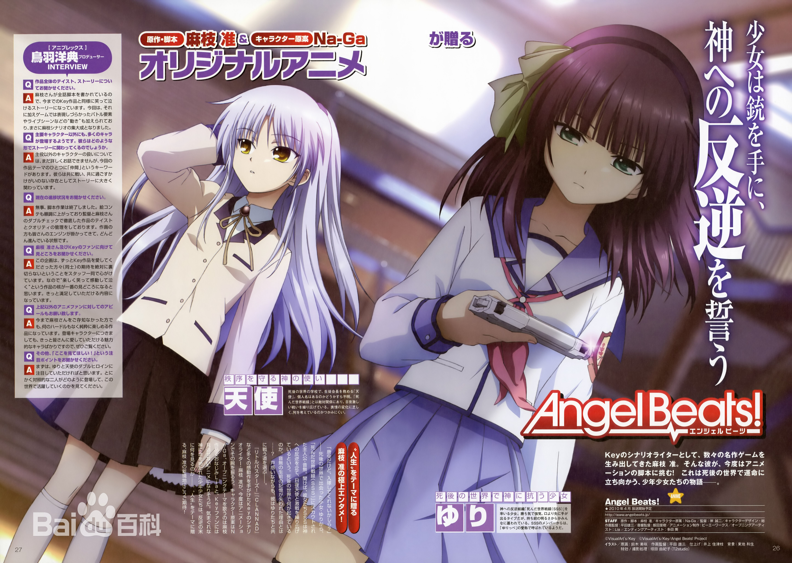

2009年7月6日的《电击G's magazine》（2009年7月号）发表了《Angel Beats!》决定TV动画化的消息， [1] 由Key社的当家剧本作家、作词家、作曲家大魔王麻枝准担当本作的故事原案、系列构成及音乐创作；作品的人设原案由《Little Busters!》等作品的原画师Na-Ga担任，为本作设计了约30名登场角色；动画制作则由制作了《true tears》、《CANAAN》等作品的P.A.WORKS担任。 [4] 作品主题围绕着“人生”展开，以死后的世界为舞台，讲述了反抗着命运的少男少女们的故事。作品中的“人生哲理”与“战斗要素”（虽然战斗要素是看点，但是战斗并不会让剧中的人物消失，也不会让他们受伤，当剧中的人物完成生前的遗憾后便会解脱，就是所谓的投胎转世，所以作品中心是围绕其对人性的体现）是其精彩看点。
